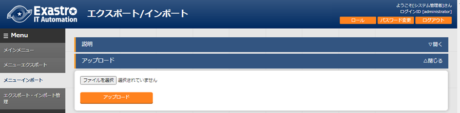

1. Ansible-driver¶
1.1. はじめに¶
1.2. Ansible driver概要¶
Ansible Coreについて¶
Ansible Automation Controllerについて¶
Ansible driverについて¶

- Legacy Role モードAnsible標準の機能を用いて各種ホストへ設定を投入します。構築コードをパッケージとして登録し、作業パターンをRoleの組み合わせで構成します。製品部門などが提供するRoleパッケージを用いて、製品のインストール、環境構築などを行う際に使われることを想定します。
1.3. Ansible driverでの変数取り扱い¶
変数の種類¶
通常変数¶
概要¶
playbookにおける表記¶
書式¶
{{ VAR_xxx }}
#xxx: 半角英数字とアンダースコア（ _ ）
正しい記述例¶
VAR_users: root
- name: ファイル内容確認
command: cat /tmp/{{ VAR_SAMPLE }}
誤った記述例¶
- "{{"または"}}" と変数名の間に「半角スペース」がない
command: cat /tmp/{{VAR_SAMPLE }}
command: cat /tmp/{{ VAR_SAMPLE}}
- "{{"または"}}" と変数名の間の「半角スペース」が2個以上ある
command: cat /tmp/{{ VAR_SAMPLE }}
command: cat /tmp/{{ VAR_SAMPLE }}
- 接頭文字(VAR_)が小文字になっている
command: cat /tmp/{{ var_SAMPLE }}
- 接頭文字(VAR_)の「_」がない
command: cat /tmp/{{ VARSAMPLE }}
- 変数名が129文字以上ある
- 登録の場合Movementを選択しても変数名に候補として表示しません。作業実行時に変数未定義のエラーとなります。
- 更新の場合 (代入値管理登録後にITA追加ルール外の記載のplaybookに更新した場合)変数名に「ID変換失敗(n)」(※nは登録時の管理番号)と表示します。作業実行時に変数未定義のエラーとなります。
- エラーの例(実行ログ)"msg": "The task includes an option with an undefined variable. The error was: 'VAR_PAUSE_time' is undefined
複数具体値変数¶
概要¶
playbookにおける表記¶
書式¶
{{ VAR_xxx }}
#xxx: 半角英数字とアンダースコア（ _ ）
正しい記述例¶
VAR_users:
- root
- mysql
誤った記述例¶
多段変数¶
概要¶
playbookにおける表記¶
書式¶
{{ VAR_xxx }}
#xxx: 半角英数字とアンダースコア（ _ ）
正しい記述例¶
VAR_users:
- user-name: alice
authorized: password
誤った記述例¶
グローバル変数¶
概要¶
playbookにおける表記¶
書式¶
{{ GBL_xxx }}
#xxx: 半角英数字とアンダースコア（ _ ）
正しい記述例¶
- name: ファイル内容確認
command: cat /tmp/{{ GBL_SAMPLE }}
誤った記述例¶
- 接頭文字(GBL_)が小文字になっている
command: cat /tmp/{{ gbl_SAMPLE }}
- 接頭文字(GBL_)の「_」がない
command: cat /tmp/{{ GBLSAMPLE }}
- 変数名が129文字以上ある
- 作業実行時にグローバル変数の置換が行われないためエラーとなります。
- エラーの例(実行ログ)"msg": "'gbl_wait_for_delay' is undefined"
テンプレート埋込変数¶
概要¶
playbookにおける表記¶
書式¶
{{ TPF_xxx }}
#xxx: 半角英数字とアンダースコア（ _ ）
正しい記述例¶
- name: ファイル内容確認
template: src={{ TPF_SAMPLE }} dest=/tmp/SAMPLE.txt
誤った記述例¶
- "{{"または"}}" と変数名の間に「半角スペース」がない
template: src={{TPF_SAMPLE }} dest=/tmp/SAMPLE.txt
template: src={{ TPF_SAMPLE}} dest=/tmp/SAMPLE.txt
- "{{"または"}}" と変数名の間の「半角スペース」が2個以上ある
template: src={{ TPF_SAMPLE }} dest=/tmp/SAMPLE.txt
- 接頭文字(TPF_)が小文字になっている
template: src={{ tpf_SAMPLE }} dest=/tmp/SAMPLE.txt
- 接頭文字(TPF_)の「_」がない
template: src={{ TPFSAMPLE }} dest=/tmp/SAMPLE.txt
- 変数名が129文字以上ある
- 登録したテンプレート素材への置換が行われません。
- エラーの例(実行ログ)"msg": "'TPFSAMPLE' is undefined"
ファイル埋込変数¶
概要¶
playbookにおける表記¶
書式¶
{{ CPF_xxx }}
#xxx: 半角英数字とアンダースコア（ _ ）
正しい記述例¶
- name: ファイル内容確認
copy: src={{ CPF_SAMPLE }} dest=/tmp/SAMPLE.txt
誤った記述例¶
- "{{"または"}}" と変数名の間に「半角スペース」がない
copy: src={{CPF_SAMPLE }} dest=/tmp/SAMPLE.txt
copy: src={{ CPF_SAMPLE}} dest=/tmp/SAMPLE.txt
- "{{"または"}}" と変数名の間の「半角スペース」が2個以上ある
copy: src={{ CPF_SAMPLE }} dest=/tmp/SAMPLE.txt
- 接頭文字(CPF_)が小文字になっている
copy: src={{ cpf_SAMPLE }} dest=/tmp/SAMPLE.txt
- 接頭文字(CPF_)の「_」がない
copy: src={{ CPFSAMPLE }} dest=/tmp/SAMPLE.txt
- 変数名が129文字以上ある
- 作業実行時にファイル埋込変数の置換が行われないためエラーとなります。
- エラーの例(実行ログ)Template embedded variable is not registered in the template list. (Role:roles/echo PlayBook:roles/echo/tasks/main.yml line:3 Template embedded variable:TPF_aa)
ITA独自変数¶
概要¶
機器一覧¶
項目名 |
変数名 |
|---|---|
ホスト名 |
__loginhostname__ |
プロトコル |
__loginprotocol__ |
ログインユーザID |
__loginuser__ |
ログインパスワード |
__loginpassword__ |
オペレーション¶
項目名 |
変数名 |
|---|---|
オペレーション |
__operation__ |
データ連携¶
項目名 |
変数名 |
|---|---|
作業ディレクトリパス |
__workflowdir__ |
項目名 |
変数名 |
|---|---|
Conductor 作業ディレクトリパス |
__conductor_workflowdir__ |
項目名 |
変数名 |
|---|---|
ステータスファイルパス |
__movement_status_filepath__ |
項目名 |
変数名 |
|---|---|
作業ディレクトリ（in）の「_parameters」のパス |
__parameters_dir_for_epc__ |
作業ディレクトリ（in）の「_parameters_file」のパス |
__parameters_file_dir_for_epc__ |
作業結果ディレクトリ（out）の「_parameters」のパス |
__parameter_dir__ |
作業結果ディレクトリ（out）の「_parameters_file」のパス |
__parameters_file_dir__ |
読替変数¶
概要¶
変数の抜出および具体値登録¶
- Ansible-Legacy Role「ロールパッケージ管理 (本書： ロールパッケージ管理 )」でアップロードしたロールパッケージ内のdefaults変数定義ファイルより変数定義の抜出を行います。詳しくは「ロールパッケージの記述(本書： ロールパッケージ管理 )」を参照してください。また、読替表を作成することでdefaults変数定義ファイルまたはITA readmeに定義されている「VAR_xxx」以外の変数をITAで扱うことが出来ます。詳しくは「 読替表（Ansible-Legacy Role）の記述 」を参照して下さい。また、アップロードしたロールパッケージ内のplaybookより、以下の書式の変数定義を抜出します。
変数の抜出および具体値登録（Ansible-Legacy Role）¶ 変数名
書式
ロールパッケージ内のディレクトリ
具体値の設定
tasks
templates
handlers
meta
その他
グローバル変数
{{ GBL_xxx }} {{ GBL_xxx | フィルタ }}
○
×
具体値の登録は「 グローバル変数管理 」メニューより行います。
テンプレート埋込変数
{{ TPF_xxx }} {{ TPF_xxx | フィルタ }}
具体値の登録は「テンプレート管理」メニューより行います。
ファイル埋込変数
{{ CPF_xxx }} {{ CPF_xxx | フィルタ }}
具体値の登録は「ファイル管理」メニューより行います。
※ 〇：変数定義抜出対象のplaybook ×：変数定義抜出対象外のplaybook
代入値登録による変数の扱い¶

- 代入値管理機能で登録した値
- Playbook中の変数に指定した値詳細は 「 代入値管理 」を参照してください。
1.4. Ansible driver コンソールメニュー構成¶
メニュー/画面一覧¶
- ITA 基本コンソールのメニューAnsible driverで利用するITA基本コンソールのメニュー一覧を以下に記述します。
基本コンソール メニュー/画面一覧¶ No
メニューグループ
メニュー・画面
説明
1
基本コンソール
オペレーション一覧
オペレーション一覧をメンテナンス(閲覧/登録/更新/廃止)できます
- Ansible共通コンソールのメニューAnsible共通コンソールのメニュー一覧を以下に記述します。
共通コンソール メニュー/画面一覧¶ No
メニューグループ
メニュー・画面
説明
1
Ansible共通コンソール
機器一覧
作業対象ホストの情報をメンテナンス(閲覧/登録/更新/廃止)できます。
2
インターフェース情報
Ansible Core、Ansible Automation Controllerサーバのどちらを実行エンジンとし構築作業をするか選択をします。
ITAシステム・Ansibledriverサーバと実行エンジンのサーバが共有するディレクトリのパスおよび、実行エンジンのサーバへの接続インターフェース情報を管理します。
3
Ansible Automation Controllerホスト一覧
Ansible Automation ControllerのRestAPI実行に必要な情報、および構築資材をAnsible Automation Controllerにファイル転送するために必要な情報を管理します。
4
グローバル変数管理
Playbookや対話ファイルなどで共通利用する変数（以降、グローバル変数と称す）と具体値を管理します。
5
ファイル管理
Playbook内の各モジュールで使用する素材ファイルと埋め込み変数を管理します。
6
テンプレート管理
Playbook内のtemplateモジュールでなどで使用するテンプレートファイルと埋め込み変数を管理します。
7
共通変数利用リスト
※非表示メニュー
テンプレート管理、ファイル管理、グローバル管理に登録されている変数をどの素材(ロール)で使用しているかを閲覧できます。
8
管理対象外変数リスト
※非表示メニュー
ロールパッケージ管理のデフォルト変数定義やテンプレート管理の変数定義で定義している変数で、代入値自動登録の変数一覧に表示したくない変数をメンテナンス(参照/更新/廃止/復活)できます。
変数名は正規表記で記載できます。
(例) ansible_* *:ワイルドカード
ansible_[0-9a-zA-Z_]*
- Ansibleコンソールのメニュー各Ansibleコンソールに対応するメニュー一覧を以下に記述します。
Ansible driverコンソール メニュー/画面一覧¶ No
メニュー・画面
説明
1
Movement一覧
Movementの一覧を管理します。
2
ロールパッケージ管理
ロールパッケージを管理します。
3
Movement-ロール紐付
Movementとロールパッケージの関連付けを管理します。
4
変数ネスト管理
多段変数が繰返配列で構成されている場合の最大繰返配列数を管理します。
5
代入値自動登録設定
CMDBのメニューに登録されているオぺレーションとホスト毎の項目値を紐付けるMovementと変数を管理します。
6
作業実行
作業実行するMovementとオペレーションを選択し実行を指示します。
7
作業状態確認
作業実行状態を表示します。
8
作業管理
作業実行履歴を管理します。
9
作業対象ホスト
Movementで使用するホストを管理します。
10
代入値管理
変数の代入値を管理します。
1.5. Ansible driver利用手順¶
Ansible-LegacyRole作業フロー¶
作業フロー詳細と参照先
- インターフェース情報の登録Ansible共通コンソールのインターフェース情報の画面から、Ansible Core、Ansible Automation Controllerサーバのどちらを実行エンジンにするかを選択し、実行エンジンのサーバへの接続情報を登録します。詳細は インターフェース情報 を参照してください。
- 作業パターン(Movement)の登録Ansible-LegacyRoleコンソールのMovement一覧の画面から、作業用のMovementを登録します。詳細は Movement一覧 を参照してください。
- ロールパッケージの登録Ansible-LegacyRoleコンソールのロールパッケージ管理の画面から、作業で使用するロールパッケージを登録します。詳細は ロールパッケージ管理 を参照してください。
- グローバル変数の登録（必要に応じて実施）Ansible共通コンソールのグローバル変数管理の画面から、Playbookで使用するグローバル変数を登録します。詳細は グローバル変数管理 を参照してください。
- テンプレートファイルの登録（必要に応じて実施）Ansible共通コンソールのテンプレート管理の画面から、ロールパッケージのtemplateモジュールなどで使用しているテンプレートファイル(src: で指定する素材)とテンプレート埋込変数を登録します。詳細は テンプレート管理 を参照してください。
- 管理対象外変数の登録（必要に応じて実施）Ansible共通コンソールの管理対象外変数リストの画面から、ロールパッケージ管理のデフォルト変数定義やテンプレート管理の変数定義で定義している変数で、代入値自動登録の変数一覧に表示したくない変数を登録します。詳細は 管理対象外変数リスト を参照してください。
- Movementにロールパッケージを指定Ansible-LegacyRoleコンソールのMovement-ロール紐付の画面から、登録したMovementにロールパッケージを指定します。詳細は Movement-ロール紐付 を参照してください。
- 多段変数の最大繰返数を指定（必要に応じて実施）Ansible-LegacyRoleコンソールの多段変数最大繰返管理の画面から、多段変数で配列定義されているメンバー変数の配列の最大繰返数を指定します。詳細は 変数ネスト管理 を参照してください。
- パラメータシートの作成メニュー作成コンソールのメニュー作成・定義の画面から、作業対象サーバの設定に使用するデータを登録するためのメニューを作成します。詳細は メニュー作成機能 を参照してください。
- 代入値自動登録設定Ansible-LegacyRoleコンソールの代入値自動登録設定の画面から、パラメータシートに登録されているオペレーションとホスト毎の項目の設定値と、Movementの変数を紐付けます。詳細は 代入値自動登録設定 を参照してください。
- 作業状態確認Ansible-LegacyRoleコンソールの作業状態確認の画面から、実行した作業の状態がリアルタイムで表示されます。また、作業の緊急停止や、実行ログ、エラーログを監視することができます。詳細は 作業状態確認 を参照してください。
1.6. Ansible driver機能・操作方法説明¶
項目…① |
説明…② |
入力必須…③ |
入力形式…④ |
制約事項…⑤ |
|---|---|---|---|---|
- 項目サブメニュー内の項目名です。
- 説明項目に対する説明です。
- 入力必須○：項目に対する内容の入力が必須の項目です。‐ ：項目に対する内容の入力が任意の項目です。
- 入力形式
- 手動入力：手動での入力が必要な項目です。
- 自動入力：自動で内容が入力される項目です。
- チェックボックス：チェックボックス形式の項目です。
- ボタン：ラジオボタン形式の項目です。
- リスト選択：リストボックス形式の項目です。
- 制約事項項目に対する制約事項(文字数制限など)です。
基本コンソール¶
オペレーション一覧¶

サブメニュー画面（オペレーション一覧）¶
Ansible共通コンソール¶
機器一覧¶
- では、作業対象ホストの情報のメンテナンス(閲覧/登録/更新/廃止)を行います。

サブメニュー画面（機器一覧）¶
- 登録 ボタンより、機器情報の登録を行います。

登録画面（機器一覧）¶
- 登録画面の共通項目一覧は以下のとおりです。Ansible driverを利用する場合には、Ansible利用情報を入力して下さい。未入力で作業実行した場合、想定外エラーとなる場合があります。
登録画面項目一覧（機器一覧）¶ 項目
説明
入力必須
入力形式
制約事項
管理システム項番
登録情報を識別する一意のIDが自動入力されます。
手動入力
HW機器種別
{{#:1 こちらに入る説明の記入をお願い致します。}}
リスト選択
ホスト名
ホスト名を記入します。
○
手動入力
最大長255バイト
DNSホスト名
{{#:1 こちらに入る説明の記入をお願い致します。}}
手動入力
最大長255バイト
IPアドレス
IPアドレス(xxx.xxx.xxx.xxx形式)を記入します。
手動入力
最大長15バイト
ログインパスワード
ユーザ
ログインユーザを記入します。
手動入力
最大長255バイト
パスワード
パスワードを指定します。
手動入力
最大長255バイト
ssh鍵認証情報
ssh秘密鍵ファイル
ssh秘密鍵ファイルを指定して鍵認証する場合の秘密鍵ファイルを入力します。アップロードしたファイルは暗号化されて保存されます。
※登録後はダウンロード不可となります。
ファイル選択
最大サイズ4Gバイト
パスフレーズ
ssh秘密鍵ファイルにパスフレーズが設定されている場合、パスフレーズを入力します。
手動入力
最大長256バイト
Ansible利用情報
Legacy/Role利用情報
認証方式
Ansible・Ansible Automation Controller から機器へ接続する際の認証方式を選択します。
●パスワード認証
ログインパスワードの管理で●の選択と、ログインパスワードの入力が必須です。
●鍵認証（パスフレーズなし）
ssh秘密鍵ファイル(id_ras)のアップロードが必須です。
●鍵認証（パスフレーズあり）
ssh秘密鍵ファイル(id_ras)のアップロードと、パスフレーズの入力が必須です。
●鍵認証（鍵交換済み）※1
ssh秘密鍵ファイル(id_ras)のアップロードは必要ありません。
●パスワード認証（winrm)
必要に応じてWinRM接続情報を入力します。
尚、パスワード認証（winrm)以外の認証方式の場合、機器側に以下の設定が必要です。
ログインユーザの sudo権限を NOPASSWD付で
/etc/sudoersに設定します。Exp)
Demo_user ALL=(ALL) NOPASSWD:ALL
リスト選択
説明欄記載のとおり
WinRM接続情報
ポート番号
WindowsServerにWinRM接続する際のポート番号を入力します。
未入力の場合はデフォルト(5985)でのWinRM接続となります。
手動入力
説明欄記載のとおり
サーバ証明書
WinRM接続ポートでhttpsのポート番号を指定した場合にサーバﾞ証明書を入力します。
アップロードしたファイルは暗号化されて保存されます。
※登録後はダウンロード不可となります。
サーバ証明書の認証を省く場合、インベントリファイル追加オプションに下記を追記して下さい。
ansible_winrm_server_cert_validation: ignore
ファイル選択
最大サイズ4Gバイト
接続オプション
（ssh接続の場合）
/etc/ansible.cfg/ssh_argsに設定しているsshオプション以外のオプションを設定したい場合、設定したいオプションを入力します。（telnet接続の場合）
telnet接続時のオプションを設定したい場合、設定したいオプションを入力します。
手動入力
最大長512バイト
インベントリファイル追加オプション
ITAが設定していないインベントリファイルのオプションパラメータをyaml形式で入力します。
Exp)
ansible_connection: network_cli ansible_network_os: ios ansible_become: yes ansible_become_method: enable
各パラメータ値を変数で記述することも出来ます。
ansible_become_password: '{{ VAR_passwd }}'
具体値に変数を記述する場合
'{{ VAR_passwd }}'
':シングル・ダブルコーテーションで囲む「必須」
手動入力
最大長512バイト
Ansible Automation Controller 利用情報
インスタンスグループ名※2
Ansible Automation Controller がクラスタ構成の場合、どのインスタンスグループで実行するかを選択します。ここで設定した、インスタンスグループはインベントリオブジェクトに設定されます。
未選択の場合はAnsible Automation Controller のデフォルトのインスタンスグループになります。
Ansible Automation Controller がクラスタ構成でない場合は、未選択で構いません。
リスト選択
接続タイプ
Ansible Automation Controller認証情報の接続タイプを設定します。通常はmachineを選択します。
ansible_connectionをlocalに設定する必要があるNetwork OSの場合にNetworkを選択します。
Networkを選択した場合、インベントリファイル追加オプションにPlatform Options(ansible_connection以外)を設定する必要があります。
Exp)
インベントリファイル追加オプションの設定例
Network OSがiosの場合の設定値
ansible_network_os: ios ansible_become: yes ansible_become_method: enable
Ansible Automation Controllerの認証情報の接続タイプについては、ドキュメント 認証情報タイ プ を参照して下さい。
Network OSとansible_connectionの関連やPlatform Optionsについては、Ansibleドキュメント Platform Options を参照ください。
○
リスト選択
備考
自由記述欄です。
手動入力
最大長4000バイト
注釈
※1 認証方式が鍵認証（鍵交換済み）に設定する為に必要な公開鍵ファイルの配布- Ansible Coreの場合ansibleがインストールされているサーバーの実行ユーザー「Ansible共通コンソール=>インターフェース情報に設定されている実行ユーザー」から作業対象ホストにssh接続します。実行ユーザーの公開鍵ファイルをログイン先ユーザーのauthorized_keysにコピーして下さい。
- Ansible Automation Controllerの場合Ansible Automation Controllerのawxユーザーから作業対象ホストにssh接続しています。awxユーザーの公開鍵ファイルをログイン先ユーザーのauthorized_keysにコピーして下さい。ブラウザよりAnsible Automation Controllerにログインし、「設定」→「ジョブ」→「分離されたジョブに公開するパス」に
/var/lib/awx/.ssh/を設定します。尚、AnsibleTower4.x以降、awxユーザーの.sshディレクトリが扱えない為、作業対象ホストと鍵認証（鍵交換済み）での接続は出来ません。
注釈
※2 Ansible driverのバックヤード機能 「Ansible Automation Controllerデータ同期」により取得したデータから選択します。
インターフェース情報¶
- では、Ansible Core、AnsibleTower、Ansible Automation Controllerのいずれかを実行エンジンに選択し、ITAシステム・Ansible driverサーバと実行エンジンのサーバが共有するディレクトリのパスのおよび実行エンジンのサーバへの接続インターフェース情報のメンテナンス(閲覧/更新)を行います。

サブメニュー画面（インタフェース情報）¶
- 編集 ボタンより、インターフェース情報の登録を行います。

登録画面（インタフェース情報）¶
- インタフェース情報画面の項目一覧は以下のとおりです。インタフェース情報が未登録または、複数レコード登録されている状態で作業実行した場合、作業実行は想定外エラーとなります。
登録画面項目一覧（インタフェース情報）¶ 項目
説明
入力必須
入力形式
制約事項
実行エンジン
実行するエンジンを下記の2種類から選択します。
・Ansible Core
・Ansible Automation Controller
○
リスト選択
Ansible
Automation
Controller
インターフェース
代表ホスト
Ansible Automation Controllerホスト一覧に登録されているホストの一覧より、ITAと通信するAnsible Automation Controllerを選択します。
リスト選択
実行エンジンがAnsible Core以外の場合に入力必須
プロトコル
Ansible Automation Controllerサーバとのプロトコルを http / https のどちらかを入力します。
手動入力
実行エンジンがAnsible Core以外の場合に入力必須
ポート
Ansible Automation Controllerサーバの接続ポート(80/443)を入力します。通常はHTTPS(443)です。
手動入力
実行エンジンがAnsible Core以外の場合に入力必須
組織名
Ansible Automation Controllerサーバに登録されている組織名を選択します。
リスト選択
実行エンジンがAnsible Core以外の場合に入力必須
認証トークン
ITAからAnsible Automation Controllerサーバに接続するユーザーの認証トークンを入力します。
手動入力
最大長128バイト
実行エンジンがAnsible Core以外の場合に入力必須
実行時データ削除
作業実行時にITAとAnsible Automation Controller 内に一時的に生成したデータリソースを作業終了後に削除するかを選択します。 「削除する」を選択した場合に削除されるデータリソースは「 実行時データ削除で削除されるデータリソース 」を参照して下さい。
リスト選択
実行エンジンがAnsible Core以外の場合に入力必須
Proxy
Adress
プロキシサーバのアドレスを入力します。
ITAがプロキシ環境下にある場合、Ansible/Ansible Automation Controllerサーバまでの疎通のために設定が必要な場合があります。
プロキシサーバのURLが
http://procy.gate.co.jp:8080の場合
Addressにはhttp://procy.gate.co.jpを入力します。
Portには 8080を入力します。
手動入力
最大128バイト
Port
プロキシサーバのポートを入力します。
ITAがプロキシ環境下にある場合、Ansible/Ansible Automation Controllerサーバまでの疎通のために設定が必要な場合があります。
手動入力
Ansible-vaultパスワード
{{#:1 こちらに入る説明の記入をお願い致します。}}
手動入力
最大長64バイト
オプションパラメータ
Movement共通のオプションパラメータを入力します。
実行エンジンがAnsible Coreの場合はansible-playbookコマンドのオプションパラメータ、実行エンジンがAnsible Core以外の場合はジョブテンプレートのパラメータを入力します。
Movement固有のオプションパラメータはMovement一覧で入力します。
オプションパラメータの詳細については、「 オプションパラメータ一覧 」を参照してください。
手動入力
最大長512バイト
NULL連携
代入値自動登録設定でパラメータシートの具体値がNULL(空白)の場合に、代入値管理への登録をNULL(空白)の値で行うか設定します。
代入値自動登録設定メニューの「NULL連携」が空白の場合この値が適用されます。
・「有効」の場合、パラメータシートの値がどのような値でも代入値管理への登録が行われます。
・「無効」の場合、パラメータシートに値が入っている場合のみ代入値管理への登録が行われます。
○
リスト選択
状態監視周期(単位ミリ秒)
「作業状態確認」で表示されるログのリフレッシュ間隔を入力します。通常は3000ミリ秒程度が推奨値です。
○
手動入力
最小値1000ミリ秒
進行状態表示行数
「作業状態確認」での進行ログ・エラーログの最大表示行数を入力します。
ステータスが[未実行]、[準備中]、[実行中]、[実行中(遅延)]の場合、指定した行数でログを出力します。
ステータスが[完了]、[完了(異常)]、[想定外エラー]、[緊急停止]、[未実行(予約)]、[予約取消]の場合、指定した行数ではなくすべてのログを出力します。
環境毎にチューニングを要しますが、通常は1000行程度が推奨値です。
○
手動入力
備考
自由記述欄です。
手動入力
最大長4000バイト
Ansible Automation Controller ホスト一覧¶
- では、Ansible Automation ControllerのRestAPI実行に必要な情報、および構築資材をAnsible Automation Controllerにファイル転送するために必要な情報のメンテナンス(閲覧/登録/更新/廃止)を行います。クラスタ構成の場合は、構成している全てのサーバを登録して下さい。ただし、Ansible Automation Controllerのhop nodeの登録は不要です。

サブメニュー画面（Ansible Automation Controller ホスト一覧）¶
- 登録 ボタンより、Ansible Automation Controllerのホスト情報の登録を行います。

登録画面（Ansible Automation Controller ホスト一覧）¶
- Ansible Automation Controller ホスト一覧画面の項目一覧は以下のとおりです。
登録画面項目一覧（Ansible Automation Controller ホスト一覧）¶ 項目
説明
入力
必須
入力形式
制約事項
ホスト
Ansible Automation Controllerサーバのホスト名（またはIPアドレス）を入力します。
HTTPS通信の場合はホスト名が推奨です。
○
手動入力
最大長128バイト
認証方式
Ansible Automation Controllerサーバへファイル転送(scp)で接続する 際の認証方式を選択します。
●パスワード認証
ログインユーザとパスワードの入力が必須です。
●鍵認証（パスフレーズなし）
ssh秘密鍵ファイル(id_ras)のアップロードが必須です。
●鍵認証（パスフレーズあり）
ssh秘密鍵ファイル(id_ras)のアップロードと、パスフレーズの入力が必須です。
●鍵認証（鍵交換済み）※
ssh秘密鍵ファイル(id_ras)のアップロードは必要ありません。
○
手動入力
最大長30バイト
ユーザー
Ansible Automation Controllerサーバへファイル転送(scp)で接続する際のログインユーザを入力します。
ログインユーザは、Ansible Automation Controllerインストール時に生成されるawxユーザーにパスワードを設定し、使用することを強く推奨します。
○
手動入力
最大長30バイト
パスワード
認証方式でパスワード認証を選択した場合に必須入力となります。 ログインユーザのパスワードを指定します。
手動入力
最大長30バイト
ssh鍵認証情報
ssh秘密鍵ファイル
ssh秘密鍵ファイルを指定して鍵認証する場合の秘密鍵ファイルを入力します。 アップロードしたファイルは暗号化されて保存されます。※登録後はダウンロード不可となります。
ファイル選択
最大サイズ4Gバイト
パスフレーズ
ssh秘密鍵ファイルにパスフレーズが設定されている場合、パスフレーズを入力します。
手動入力
最大長256バイト
isolatedTower
クラスタ構成で構築されている場合で、対象ノードがAnsibleTowerのisolatednode/Ansible Automation Controllerのexecution node の場合、「●」を選択します。
選択方式
備考
自由記述欄です。
手動入力
最大長4000バイト
注釈
※ 認証方式が鍵認証（鍵交換済み）に設定する為に必要な公開鍵ファイルの配布ITAがインストールされているサーバーのrootからAnsible Automation Controllerのawxユーザーでssh接続します。rootの公開鍵ファイルをAnsible Automation Controllerのawxユーザーのauthorized_keysにコピーして下さい。
グローバル変数管理¶
- では、Playbookで利用するグローバル変数名のメンテナンス(閲覧/登録/更新/廃止)を行います。

サブメニュー画面（グローバル変数管理）¶
- 登録 ボタンより、グローバル変数管理情報の登録を行います。

登録画面（グローバル変数管理）¶
- グローバル変数管理画面の項目一覧は以下のとおりです。
登録画面項目一覧（グローバル変数管理）¶ 項目
説明
入力
必須
入力形式
制約事項
グローバル変数名
変数名を入力します。
変数名は、「GBL_****」形式で入力します。
**** ：半角英数字とアンダースコア（ _ ）が利用可能です。(最小値:1バイト、最大値:128バイト)
○
手動入力
説明欄記載のとおり
具体値
具体値を入力します。複数行の具体値も入力できますが、Pioneerの対話ファイルで使用しているグローバル変数で複数行の具体値を設定すると、作業実行時にエラーとなります。
具体値にファイル埋込変数「CPF_」とテンプレート埋込変数「TPF_」が入力出来ます。変数を記述する場合、Playbookに変数を記述する場合と同様、変数名を{{}}で囲みます。
入力例)
具体値にTPF_sampleを入力する場合
'{{ TPF_sample }}'
手動入力
最大長4000バイト
変数名説明
変数に対する説明・コメントを入力します。
手動入力
最大長4000バイト
備考
自由記述欄です。
手動入力
最大長4000バイト
ファイル管理¶
- では、Playbook内で定義している各モジュールで使用するファイルとファイル埋込変数のメンテナンス(閲覧/登録/更新/廃止)を行います。ファイル管理でファイル素材を登録しておくことで、Playbook内で定義している各モジュールで使用するファイルをファイル埋込変数名で指定することができます。

サブメニュー画面（ファイル管理）¶
- 登録 ボタンより、ファイル管理情報の登録を行います。

登録画面（ファイル管理）¶
- 登録画面の項目は以下のとおりです。
登録画面項目一覧（ファイル管理）¶ 項目
説明
入力
必須
入力形式
制約事項
ファイル埋込
変数名
各モジュールのパラメータに埋め込む変数名を入力します。
変数名は、「CPF_****」形式で入力します。
****：半角英数字とアンダースコア（ _ ）が利用可能です。(最小値:1バイト、最大値:128バイト)
○
手動入力
説明欄記載のとおり
ファイル素材
各モジュールで使用するファイルをアップロードします。
○
ファイル登録
最大サイズ4Gバイト
備考
自由記述欄です。
手動入力
最大長4000バイト
注釈
- ファイル管理で登録したhostsファイルをファイル埋め込み変数を使用して作業対象サーバの/etc/配下にコピーする場合
- ファイル管理メニューから下記のようにhostsファイルを登録します。
ファイル管理の登録内容¶ ファイル埋込変数名
ファイル素材
CPF_hosts
hosts
- 下記のようにPlaybookを記述します。※destはファイル名も記述してください。ファイル名の指定がない場合、登録したファイル素材のファイル名の前にITAの管理番号が付与された名前のファイル名で処理されます。たとえば、dest=/etc/ とした場合、ファイル名は/etc/10桁の数値_hostsとなります。Playbookの記述
- copy: src='{{ CPF_hosts }}' dest=/etc/hosts
- ファイル管理で登録したtool.tgzファイルをファイル埋込変数を使用して作業対象サーバの/usr/local/bin/配下に解凍する場合
- ファイル管理メニューから下記のようにtool.tgzファイルを登録します。
ファイル管理の登録内容¶ ファイル埋込変数名
ファイル素材
CPF_tool_tgz
tool.tgz
- 下記のようにPlaybookを記述します。Playbookの記述
- unarchive: src={{ CPF_tool_tgz }} dest=/usr/local/bin
テンプレート管理¶
- では、Playbookで定義しているtemplateモジュールやios_configモジュールなどのパラメータで使用するJinja2テンプレートファイルとテンプレート埋込変数のメンテナンス(閲覧/登録/更新/廃止)を行います。テンプレート管理でテンプレート素材を登録しておくことで、Playbook内で定義しているtemplateモジュールなどで使用するtemplateファイルをテンプレート埋込変数で指定することができます。

サブメニュー画面（テンプレート管理）¶
- 登録 ボタンより、テンプレート管理情報の登録を行います。

登録画面（テンプレート管理）¶
- 登録画面の項目は以下のとおりです。
登録画面項目一覧（テンプレート管理）¶ 項目
説明
入力
必須
入力形式
制約事項
テンプレート埋込変数名
templateモジュールやios_configモジュールなどのパラメータに埋め込む変数名を入力します。
変数名は、「TPF_****」形式で入力します。
**** ：半角英数字とアンダースコア（ _ ）が利用可能です。(最小値:1バイト、最大値:128バイト)
○
手動入力
説明欄記載のとおり
テンプレート素材
モジュールのパラメータで使用するJinja2テンプレートファイルをアップロードします。
○
ファイル登録
テキスト形式 最大サイズ4Gバイト
変数定義
テンプレート素材で使用している変数を定義します。
具体値は定義のみで使用することはありません。
Ansible-Roleのみで使用するテンプレートで、default変数定義ファイルなどに変数定義をしている場合、変数定義は省略できます。
同名の変数を複数のテンプレートで使用する場合、変数定義を合わせる必要がありのす。変数定義が一致していない場合は登録でエラーとなります。
変数定義はAnsibleの仕様に準拠していますが、ITA独自仕様があります。表5.2-5-1に変数定義の留意事項を記載します。また、変数名の命名規則は表 変数の種類と同様です。
手動入力
最大長4000バイト
備考
自由記述欄です。
手動入力
最大長4000バイト
警告
Tip
種類 |
留意事項 |
|---|---|
通常変数 |
具体値は省略可能です。 e.g.) VAR_sample_1: none
VAR_sample_2:
|
複数具体値変数 |
具体値は省略可能です。 e.g.) VAR_sample_1:
- none
VAR_sample_2: []
|
多段変数 |
階層化された変数構造が定義出来ます。 e.g.) VAR_sample_1:
- item1: none
item2:
VAR_sample_2:
- array:
- item1: none
item2:
同名の変数をdefault変数定義ファイルなどに定義している場合は、変数定義を合わせる必要があります。変数定義が一致していない場合は登録でエラーとなります。 |
グローバル変数 |
具体値は省略可能です。 e.g.) GBL_sample_1: none
GBL_sample_2:
|
ITA独自変数 |
変数の定義は不要です。 |
読替変数 |
定義出来る変数の種類は以下の3種類です。 ・通常変数 ・複数具体値変数 ・多段変数 各変数定義の留意事項は同様です。 e.g.) LCA_sample_1:
LCA_sample_2: []
LCA_sample_3:
- item1: none
item2:
|
注釈
- テンプレート管理メニューから下記のようにhostsファイルを登録します。
テンプレート管理の登録内容¶ テンプレート埋込変数名
テンプレート素材
TPF_hosts
hosts
- 下記のようにPlaybookを記述します。※destはファイル名も記述してください。ファイル名の指定がない場合、登録したテンプレート素材のファイル名の前にITAの管理番号が付与された名前のファイル名で処理されます。たとえば、dest=/etc/ とした場合、ファイル名は/etc/10桁の数値_hostsとなります。Playbookの記述
- template: src='{{ TPF_hosts }}' dest=/etc/hosts
管理対象外変数リスト¶
- では、ロールパッケージ管理のデフォルト変数定義やテンプレート管理の変数定義で定義している変数で、代入値自動登録の変数一覧に表示したくない変数のメンテナンス(参照/更新/廃止/復活)を行います。

サブメニュー画面（管理対象外変数リスト）¶
- 登録 ボタンより、オペレーション情報の登録を行います。

登録画面（管理対象外変数リスト）¶
- 管理対象外変数リスト画面の項目一覧は以下のとおりです。
登録画面項目一覧（管理対象外変数リスト）¶ 項目
説明
入力
必須
入力形式
制約事項
変数名
{{#:1 こちらに入る説明の記入をお願い致します。}}
○
手動入力
説明欄記載のとおり
備考
自由記述欄です。
手動入力
最大長4000バイト
Ansible-LegacyRoleコンソール¶
Movement一覧¶
- ではMovement名のメンテナンス(閲覧/登録/更新/廃止)を行います。

サブメニュー画面（Movement一覧）¶
- 登録 ボタンより、Movement情報の登録を行います。

登録画面（Movement一覧）¶
- 登録画面の項目一覧は以下のとおりです。
登録画面項目一覧（Movement一覧）¶ 項目
説明
入力必須
入力形式
制約事項
Movement名
Movementの名称を入力します。
○
手動入力
最大長256バイト
遅延タイマー
Movementが指定期間遅延した場合にステータスを遅延として警告表示したい場合に指定期間(1～)を入力します。(単位:分)
未入力の場合は警告表示しません。
手動入力
Ansible利用情報
ホスト指定形式
特別にIPアドレスで表現しないホストを指定したい場合に「ホスト名」を選択します。
通常はIPが推奨です。
○
リスト選択
WinRM接続
対象ホストがWindowsServerの場合に、「●」を選択します。
リスト選択
ヘッダーセクション
ITAが自動生成する親Playbookの先頭からtasksまたはrolesセクションまでのセクションを編集します。
未入力の場合は、以下を適用します。
# Ansible - hosts: all remote_user: "{{ __loginuser__ }}" gather_facts: no become: yes # Ansible Automation Controller - hosts: all gather_facts: no become: yes
※winrm接続の場合は become: yesは適用しません。
手動入力
最大長512バイト
オプションパラメータ
Movement固有のオプションパラメータを入力します。
実行エンジンがAnsible Coreの場合はansible-playbookコマンドのオプションパラメータ、実行エンジ ンがAnsible Core以外の場合はジョブテンプレートのパラメータを入力します。
オプションパラメータの詳細については、「 オプションパラメータ一覧 」を参照してください。
手動入力
最大長512バイト
ansible.cfg
作業実行時に使用するansible.cfgをアップロードします。
未アップロードの場合は、デフォルトが使用されます。
また、ロールパッケージ管理でアップロードされているzipファイルにansible.cfgが含まれている場合は、この項目でアップロードしたansible.cfgで上書きされます。
ファイル選択
最大サイズ4Gバイト
Ansible Automation Controller利用情報
実行環境
Ansible Automation Controllerサーバに構築されている実行環境が表示されています。
実行する実行環境を選択します。
未選択の場合は、デフォルト「Default execution environment」が使用されます。
リスト選択
備考
自由記述欄です。
手動入力
最大長4000バイト
警告
WinRM接続で「●」を選択した場合は接続するホストをすべてWindowsServerとみなします。
ロールパッケージ管理¶
- ユーザーが作成したロールパッケージファイルのメンテナンス(閲覧/登録/更新/廃止)を行います。ロールパッケージファイルは、「roles」のある階層のディレクトリをzipにて圧縮したものを登録してください。ロールパッケージディレクトリ構成などは「 general_operations_write_role_package_ansible_legacy_role 」を参照してください。

サブメニュー画面（ロールパッケージ管理）¶
- 登録 ボタンより、ロールパッケージ情報の登録を行います。

登録画面（ロールパッケージ管理）¶
- 登録画面の項目一覧は以下のとおりです。
登録画面項目一覧（ロールパッケージ管理）¶ 項目
説明
入力
必須
入力形式
制約事項
ロールパッケージ名
ITAで管理するロールパッケージ名を入力します。
○
手動入力
最大長256バイト
ロールパッケージファイル
作成したロールパッケージファイル(zip形式)をアップロードします。
アップロードするロールパッケージファイルに含まれるPlaybookファイルは文字コードがUTF-8でBOMなしで作成して下さい。
UTF-8でBOMなし以外のPlaybookファイルが含まれていると登録時にエラーとなります。
詳しくは、「 general_operations_write_role_package_ansible_legacy_role 」を参照下さい。
○
ファイル選択
最大サイズ4Gバイト
備考
自由記述欄です。
手動入力
最大長4000バイト
警告
Movement-ロール紐付¶
- Movementで実行するロールパッケージのメンテナンス(閲覧/登録/更新/廃止)を行います。

サブメニュー画面（Movement-ロール紐付）¶
- 登録 ボタンより、Movement-ロール紐付の登録を行います。

登録画面（Movement-ロール紐付）¶
- 登録画面の項目一覧は以下のとおりです。
登録画面項目一覧（Movement-ロール紐付）¶ 項目
説明
入力
必須
入力形式
制約事項
Movement
Movement一覧で登録したMovementが表示されます。
○
リスト選択
ロールパッケージ名
ロールパッケージ管理で登録したロールパッケージが表示されます。実行するロールパッケージを選択します。
同一Movementに複数のロールパッケージは登録出来ません。
○
リスト選択
ロール名
ロールパッケージ名で選択したロールパッケージに含まれているロール名が表示されます。実行するロールパッケージ内のロールを選択します。
○
インクルード順序
ロールの実行順序(1～:一意値)を入力します。
入力されたインクルード順序(昇順)でロールが実行されます。
○
手動入力
半角整数
備考
自由記述欄です。
手動入力
最大長4000バイト
変数ネスト管理¶
- では、「 ロールパッケージ管理 」で登録したロールパッケージで定義されている多段変数内で繰返配列定義されているメンバー変数の配列の最大繰返数のメンテナンス(閲覧/更新)を行います。

サブメニュー画面（変数ネスト管理）¶
- 編集 ボタンより最大繰返数の更新を行います。

登録画面（変数ネスト管理）¶
- 登録画面の項目一覧は以下のとおりです。
登録画面項目一覧（変数ネスト管理）¶ 項目
説明
入力
必須
入力形式
制約事項
最大繰返数
配列の最大繰返数を1～99,999,999の範囲で入力します。
○
手動入力
入力値1～99,999,999
備考
自由記述欄です。
手動入力
最大長4000バイト
警告
Tip
代入値自動登録設定¶
- メニュー作成機能で作成したパラメータシートの項目の設定値とMovementの変数を紐付けます。登録した情報は内部の処理により代入値管理と作業対象ホストに反映されます。general_operations_substitution_value_auto_registration_setting2 に反映ルールを記載しています。

サブメニュー画面（代入値自動登録設定）¶
- 登録 ボタンより代入値自動登録設定を行います。

登録画面（代入値自動登録設定）¶
- 登録画面の項目一覧は以下のとおりです。
登録画面項目一覧（代入値自動登録設定）¶ 項目
説明
入力必須
入力形式
制約事項
パラメータシート(From)
メニューグループ:メニュー:項目
{{#:1 こちらに入る説明の記入をお願い致します。}}
○
リスト選択
代入順序
{{#:1 こちらに入る説明の記入をお願い致します。}}
手動入力
ブランクまたは、正の整数
登録方式
Value型:項目の設定値を紐付けた変数の具体値とする場合に選択します。
Key型:項目の名称を紐付けた変数の具体値とする場合に選択します。
項目の設定値が空白の場合は紐付け対象外となります。
○
リスト選択
Movement名
Movement一覧で登録したMovementが表示されます。
Movementを選択します。
○
リスト選択
IaC変数(To)
Movement名:変数名
Movement-ロール紐付で登録した資材で使用している変数が表示されます。
具体値に紐付けたい変数を選択します。
○
リスト選択
Movement名:変数名:メンバー変数
変数名で多段変数を選択した場合に多段変数のメンバー変数が表示されます。
メンバー変数を選択します。
※1
リスト選択
代入順序
複数具体値が設定できる変数の場合のみ必須入力になります。
具体値の代入順序（1～）を入力します。入力値に従い昇順で代入されます。具体値が複数ない場合でも代入順序（1～）を入力します。
※2
手動入力
ブランクまたは、正の整数
NULL連携
パラメータシートの具体値がNULL(空白)の場合に、代入値管理への登録をNULL(空白)の値で行うか設定します。
・「True」の場合、パラメータシートの値がどのような値でも代入値管理への登録が行われます。
・「False」の場合、パラメータシートに値が入っている場合のみ代入値管理への登録が行われます。
・空白の場合、Ansibleインターフェース情報の「NULL連携」の値が適用されます。
※3
リスト選択
備考
自由記述欄です。
手動入力
最大長4000バイト
※1:選択した変数が多段変数の場合のみ必須※2:選択した変数が複数具体値設定可能な変数の場合のみ必須※3:任意
注釈
- 下記のようにロールパッケージの変数定義ファイル(defaults/main.yml)に変数を定義して、 でロールパッケージを登録します。変数定義ファイルの記述内容
VAR_aaaa: - name: alice object: obj1 directory: - craete_dir: /dir password: - craete_pass: sample: - sample_pass: pass1 - craete_pass: sample: - sample_pass: pass2 user: root: - craete_users: prod: - prod_user: user1 dev: - dev_user: user2
- 1. のように変数を定義してロールパッケージを登録した場合、 には下記のように登録され、 ではデフォルトで下記のメンバー変数が選択できます。
変数ネスト管理の登録内容¶ 変数名
メンバー変数名
最大繰返数
VAR_aaaa
0
1
VAR_aaaa
0.directory
1
VAR_aaaa
0.password
1
VAR_aaaa
0.password.sample
1
VAR_aaaa
0.user.root
1
VAR_aaaa
0.user.root.dev
1
VAR_aaaa
0.user.root.prod
1
代入値自動登録設定で選択可能なメンバー変数¶ 変数名
メンバー変数名
VAR_aaaa
[0].directory[0].create_dir
VAR_aaaa
[0].name
VAR_aaaa
[0].object
VAR_aaaa
[0].password[0].create_pass
VAR_aaaa
[0].password[0].sample[0].sample_pass
VAR_aaaa
[0].user.root[0].create_users
VAR_aaaa
[0].user.root[0].dev[0].dev_user
VAR_aaaa
[0].user.root[0].prod[0].prod_user
- でメンバー変数「0.user.root.prod」の最大繰返数を初期値"1"から"3"に更新します。
変数ネスト管理の更新内容¶ 変数名
メンバー変数名
最大繰返数
VAR_aaaa
0.user.root.prod
3
- 3. のようにメンバー変数を更新した場合、 で選択できるメンバー変数も下記のように更新されます。（メンバー変数 [0].user.root[0].prod[1].prod_user と [0].user.root[0].prod[2].prod_user がプルダウンに追加されました。）
代入値自動登録設定で選択可能なメンバー変数¶ 変数名
メンバー変数名
VAR_aaaa
[0].directory[0].create_dir
VAR_aaaa
[0].name
VAR_aaaa
[0].object
VAR_aaaa
[0].password[0].create_pass
VAR_aaaa
[0].password[0].sample[0].sample_pass
VAR_aaaa
[0].user.root[0].create_users
VAR_aaaa
[0].user.root[0].dev[0].dev_user
VAR_aaaa
[0].user.root[0].prod[0].prod_user
VAR_aaaa
[0].user.root[0].prod[1].prod_user
VAR_aaaa
[0].user.root[0].prod[2].prod_user
注釈
- 下記のようにロールパッケージの変数定義ファイル(defaults/main.yml)に変数を定義して、 でロールパッケージを登録します。変数定義ファイルの記述内容
VAR_substitutionA: - user-name - group-name - meta-name VAR_substitutionB: - login - authorized - space - cluster
- で紐付対象メニューに登録されている項目の設定値とRole内の変数を紐付けします。
紐付対象メニュー(sample-menu)の登録内容¶ ホスト名
オペレーション名
パラメータ
項目1
項目2
項目3
項目4
test-host
test-ope
value1
value2
value3
value4
代入値自動登録設定の登録内容¶ メニュー名
項目
変数名
代入順序
sample-menu
項目1
VAR_substitutionA
3
sample-menu
項目2
VAR_substitutionA
1
sample-menu
項目3
VAR_substitutionA
2
sample-menu
項目1
VAR_substitutionB
2
sample-menu
項目2
VAR_substitutionB
4
sample-menu
項目3
VAR_substitutionB
1
sample-menu
項目4
VAR_substitutionB
3
- 作業実行時、投入データ(InputData_xxxx.zip)内のホスト変数ファイル(host_vars/test-host)には、代入値自動登録設定で登録した変数が下記のように出力されます。ホスト変数ファイルへの出力内容
VAR_substitutionA: - value2 - value3 - value1 VAR_substitutionB: - value3 - value1 - value4 - value2
注釈
- 下記のようにロールパッケージの変数定義ファイル(defaults/main.yml)に変数を定義して、 でロールパッケージを登録します。変数定義ファイルの記述内容
VAR_output: - name: alice group: root user: root: - craete_users: prod: - prod_user: user1 dev: - dev_user: user2
- で紐付対象メニューに登録されている項目の設定値とRole内の変数を紐付けします。
紐付対象メニュー(sample-menu)の登録内容¶ ホスト名
オペレーション名
パラメータ
項目1
項目2
test-host
test-ope
value1
value2
代入値自動登録設定の登録内容¶ メニュー名
項目
変数名
メンバー変数名
sample-menu
項目1
VAR_output
[0].name
sample-menu
項目2
VAR_output
[0].user.root[0].dev[0].dev_user
- 作業実行時、投入データ(InputData_xxxx.zip)内のホスト変数ファイル(host_vars/test-host)には、代入値自動登録設定で登録した変数が下記のように出力されます。ホスト変数ファイルへの出力内容
VAR_output: - name: value1 user: root: - dev: - dev_user: value2
注釈
- で下記のように登録します。
ファイル管理の登録内容¶ ファイル埋込変数名
ファイル素材
CPF_test
test_file.txt
テンプレート管理の登録内容¶ テンプレート埋込変数名
テンプレート素材
TPF_sample
sample.tpl
- で「Ansible共通:ファイル管理:ファイル埋込変数名」「Ansible共通:テンプレート管理:テンプレート埋込変数名」をパラメータシートの項目としてメニュー作成後、 で項目の設定値としてファイル埋込変数とテンプレート埋込変数を登録します。

メニュー定義・作成画面¶
サンプルパラメータシート(メニュー名)の登録内容¶ ホスト名
オペレーション名
パラメータ
ファイル管理
テンプレート管理
test-host
test-ope
CPF_test
TPF_sample
- で2. のパラメータシートに登録した項目の設定値とPlaybookの変数を紐付して で作業実行します。
代入値自動登録設定の登録内容¶ メニュー名
項目
変数名
サンプルパラメータシート
ファイル管理
VAR_filetest
サンプルパラメータシート
テンプレート管理
VAR_temptest
- の 代入値確認 ボタンで具体値に '{{ CPF_test }}' '{{ TPF_sample }}' が反映されていることが確認できます。また、作業実行後、作業対象サーバに1. で登録したファイル素材とテンプレート素材が設置されます。

作業状態確認の代入値確認画面¶
作業実行¶

作業実行画面¶
- ドライラン「ドライラン」ボタンをクリックすると、実際に対象機器に対して構築作業をせず、ドライランを行うことができます。ドライランを行った場合の動作は、Ansible-Playbookコマンドの--checkパラメータを指定してroleを実行します。
- 予約日時の指定「予約日時」を入力することで、実行を予約することがきます。「予約日時」には、未来の日時のみ登録可能です。
作業状態確認¶

サブメニュー画面（作業状態確認）¶
- 実行状態表示実行状況に即し、「ステータス」が表示されます。また、実行ログ、エラーログに実行状況の詳細が表示されます。「実行種別」には、ドライランの場合は「ドライラン」、それ以外は「通常」が表示されます。ステータスが想定外エラーで終了した場合、Webコンテンツの登録不備が原因であれば、エラーログにメッセージが表示されます。また、「 インターフェース情報 」の登録不備等で、Ansible RestAPIとの通信に失敗した場合にはエラーログにメッセージが表示されません。この場合は、アプリケーションログにエラー情報が記録されます。必要に応じてアプリケーションログを確認ください。Symphonyから実行した場合に、「呼出元Symphony」には、どのSymphonyから実行されたかを表示します。Conductorから実行した場合に、「呼出元Conductor」には、どのConductorから実行されたかを表示します。Ansible-LegacyRoleドライバから直接実行した場合は空欄になります。「実行ユーザ」には、作業実行メニューより「実行」ボタンまたは「ドライラン」ボタンを押下した際のログインユーザが表示されます。
- 作業対象ホスト確認作業対象ホスト確認 ボタンで「 作業対象ホスト 」が表示され、作業対象のオペレーションとMovementに絞り込んだホストが表示されます。
- 代入値確認代入値確認 ボタンで「 代入値管理 」が表示され、作業対象のオペレーションとMovementに絞り込んだ代入値が表示されます。
- 緊急停止/予約取り消し緊急停止 ボタンで構築作業を停止させることができます。また、実行前の「予約実行」の作業の場合は、 予約取消 ボタンが表示されます。 予約取消 ボタンで予約実行が取り消せます。
- 実行ログ表示Ansible Automation Controllerで実行した場合、構築対象機器の機器一覧のユーザー・パスワード・インスタンスグルーブなのどの項目値でグループ化された構築対象機器の単位でPlaybookが実行され、ansibleの実行ログが分割されます。さらに、Movement一覧のオプションパラメータでジョブスライス数を指定するすることによりグループ化された構築対象機器をさらにジョブスライス数で分割しplaybookが実行され、ansibleの実行ログも分割されます。実行ログが分割された場合、表示ログファイルのプルダウンが表示され、表示したいログファイルを選択する事ができます。
 表示ログファイルのプルダウンに表示されるログファイル名は以下の2種類があります。exec.log: 全ての実行ログをまとめたログファイルです。exec.log以外: 分割された実行ログファイルです。ファイル命名規則は以下になります。Ita_<mode名>_executions_jobtpl_<作業番号>_<グループ番号>_<通番>
表示ログファイルのプルダウンに表示されるログファイル名は以下の2種類があります。exec.log: 全ての実行ログをまとめたログファイルです。exec.log以外: 分割された実行ログファイルです。ファイル命名規則は以下になります。Ita_<mode名>_executions_jobtpl_<作業番号>_<グループ番号>_<通番> - ログ検索実行ログ、エラーログは、フィルタリングができます。各ログのフィルタのテキストボックスに検索したい文字列を入力し、「該当行のみ表示」のチェックボックスをチェックすることで該当する行だけが表示されます。実行ログ、エラーログのリフレッシュ表示間隔と最大表示行数を、「 インターフェース情報 」の「状態監視周期（単位ミリ秒）」と「進行状態表示行数」で設定できます。
- 結果データ実行ログ、エラーログなどをダウンロードすることができます。
作業管理¶

サブメニュー画面（作業管理）¶
作業対象ホスト¶

{kind=link}
代入値管理¶
- オペレーションに紐付くMovementで利用されるRole内の変数に代入する具体値を閲覧できます。

サブメニュー画面（代入値管理）¶
- 閲覧画面の項目一覧は以下のとおりです。
閲覧画面項目一覧（代入値管理）¶ 項目
説明
作業No
{{#:1 こちらに入る説明の記入をお願い致します。}}
オペレーション
作業対象ホストに登録されているオペレーションが表示されます。
Movement名
作業対象ホストに登録されているデータの中から、選択されたオペレーションに紐づくMovementが表示されます。
ホスト名
作業対象ホストに登録されているデータで選択されたオペレーションとMovementに紐づくホストが表示されます。
Movement名:変数名
Movement-ロール紐付に登録されている資材の中から、選択されたMovementにアタッチしている変数名が表示されます。
Movement名:変数名:メンバー変数
変数名で多段変数を選択した場合に多段変数のメンバー変数が表示されます。
具体値
文字列
Sensitive設定
「OFF」または「ON」が表示されます。
Ansibleに渡すホスト変数ファイルには、ansible-vaultで暗号化された内容が設定されます。
値
オペレーション/Movement/ホストで使用する変数の具体値が表示されます。
代入値自動登録設定でファイル埋込変数とテンプレート埋込変数をPlaybookの変数に紐付した場合、具体値には '{{ CPF_xxxx }}' '{{ TPF_xxxx }}'が表示されます。
ファイル
オペレーション/Movement/ホストで使用する変数にファイルを埋込む場合に、埋込むファイルがアップロードされます。
代入順序
複数具体値が設定できる変数の場合のみ表示されます。
備考
自由記述欄です。
1.7. 構築コード記述方法¶
ロールパッケージ（Ansible-Legacy Role）の記述¶
(上位ディレクトリ)
│
├─── site.yml ・・・・・・・・・・・・・・・・・・・・・・・・ (1)
│
├─── hosts ・・・・・・・・・・・・・・・・・・・・・・・・ (2)
│
├─── group_vars ・・・・・・・・・・・・・・・・・・・・・・・・ (3)
│
├─── host_vars ・・・・・・・・・・・・・・・・・・・・・・・・ (4)
│
├─── ITA readme ・・・・・・・・・・・・・・・・・・・・・・・・ (5)
│
├─── 読替表 ・・・・・・・・・・・・・・・・・・・・・・・・ (6)
│
└─── roles ・・・・・・・・・・・・・・・・・・・・・・・・ (7)
│
├─ [role名①] ・・・・・・・・・・・・・・・・・・・・・・・・ (8)
│ │
│ ├── readme.md ・・・・・・・・・・・・・・・・・・・・・・・・ (9)
│ │
│ ├── tasks ・・・・・・・・・・・・・・・・・・・・・・・・ (10)
│ │ ├── main.yml
│ │ └── user_files
│ │ └── user.yml
│ │
│ ├── handlers ・・・・・・・・・・・・・・・・・・・・・・・・ (11)
│ │ ├── main.yml
│ │ └── user_files
│ │ └── user.yml
│ │
│ ├── templates ・・・・・・・・・・・・・・・・・・・・・・・・ (12)
│ │ ├── hosts.j2
│ │ └── user_files
│ │ └── user.j2
│ │
│ ├── files ・・・・・・・・・・・・・・・・・・・・・・・・ (13)
│ │ └── sudoers
│ │
│ ├── vars ・・・・・・・・・・・・・・・・・・・・・・・・ (14)
│ │ └─ main.yml
│ │
│ ├── defaults ・・・・・・・・・・・・・・・・・・・・・・・・ (15)
│ │ ├── main.yml
│ │ └── user_files
│ │ └── user.yml
│ │
│ ├── meta ・・・・・・・・・・・・・・・・・・・・・・・・ (16)
│ │ └── main.yml
│ │
│ 上記以外のディレクトリやファイルが存在する場合、 ITAは関知しません。
│
└─ [role名②] ロールの数に特に制限はありません。
含めるべきファイル
〇 ：必要
△ ：任意
|
ITAでの取り扱い |
|
|---|---|---|
(1) site.yml (マスターPlaybook) |
△ |
ITAで作成されるため、存在する場合は上書きされます。 |
(2) hosts |
△ |
ITAで作成されるため、存在する場合は上書きされます。 |
(3) group_vars |
△ |
ITAで作成されるため、存在する場合は上書きされます。 |
(4) host_vars |
△ |
ITAで作成されるため、存在する場合は上書きされます。 |
(5) ITA readme |
△ |
ITA readmeはロール毎に定義します。無くてもエラーにはなりません。
ITA readmeは、文字コードがUTF-8のBOMなしで作成して下さい。
詳細については「 ITAreadme（Ansible-Legacy Role）の記述 」をご確認ください。
|
(6) 読替表 |
△ |
読替表はロール毎に定義します。無くてもエラーにはなりません。
詳細については「 読替表（Ansible-Legacy Role）の記述 」をご確認ください。
|
(7) roles |
〇 |
rolesディレクトリが存在しない場合はアップロードでエラーになります。 |
(8) roles/[role 名①] |
〇 |
role名ディレクトリが存在しない場合はアップロードでエラーになります。
tasksディレクトリを含むディレクトリをroleとして扱います。
ディレクトリ階層が深くても問題ありません。
|
(9) roles/[role 名①]/readme.md |
△ |
ITA は関知しません。 |
(10) roles/[role 名①]/tasks |
〇 |
tasksディレクトリは必須です。
playbookファイルは、文字コードがUTF-8のBOMなで作成して下さい。
main.ymlがない場合はアップロードでエラーになります。
main.yml以外のファイルも配置できます。
サブディレクトリにmain.yml以外のファイルを配置できます。
|
(11) roles/[role 名①]/handlers |
△ |
handlersディレクトリの有無は関知しません。
playbookファイルは、文字コードがUTF-8のBOMなしで作成して下さい。
main.ymlの有無は関知しません。
main.yml以外のファイルも配置できます。
サブディレクトリにファイルを配置できます。
|
(12) roles/[role 名①]/templates |
△ |
templatesディレクトリの有無は関知しません。
サブディレクトリにファイルを配置できます。
|
(13) roles/[role 名①]/files |
△ |
filesディレクトリの有無は関知しません。
ファイル及びサブディレクトリの有無は関知しません。
ファイル内容は関知しません。
|
(14) roles/[role 名①]/vars |
△ |
varsディレクトリの有無は関知しません。
playbookファイルは、文字コードがUTF-8のBOMなしで作成して下さい。
ファイル及びサブディレクトリの有無は関知しません。
ファイル内容は関知しません。
|
(15) roles/[role 名①]/defaults |
△ |
defaultsディレクトリの有無は関知しません。
playbookファイルは、文字コードがUTF-8のBOMなしで作成して下さい。
main.ymlの有無は関知しません。
main.yml以外のファイルも配置できます。
サブディレクトリにmain.yml以外のファイルを配置できます。
|
(16) roles/[role 名①]/meta |
△ |
metaディレクトリの有無は関知しません。
playbookファイルは、文字コードがUTF-8のBOMなしで作成して下さい。
ファイル及びサブディレクトリの有無は関知しません。
ファイル内容は関知しません。
|
マスターPlaybook¶
① へッダーセクション¶
- Ansible Coreの場合
# ヘッダーセクションのデフォルト値
- hosts: all
remote_user: "{{ __loginuser__ }}"
gather_facts: no
become: no
- Ansible Automation Controllerの場合
# ヘッダーセクションのデフォルト値
- hosts: all
gather_facts: no
become: yes
② rolesセクション¶

変数名の一意管理¶
デフォルト変数定義ファイル(defaults->main.yml)のITA独自仕様¶
Ansible Role Directory Structureにおける所定ディクレトリのサブディレクトリについて注意事項¶
ロールパッケージ内のロール名をディレクトリ階層にした場合の留意点¶
└── roles
├── parent
│ ├── sample_role1
│ │ ├── defaults
│ │ └── tasks
│ └── sample_role2
│ ├── defaults
│ ├── sample_role3
│ │ ├── defaults
│ │ └── tasks
│ ├── sample_role4
│ │ ├── defaults
│ │ └── tasks
│ └── tasks
├── sample_role5
│ └── defaults
└── sample_role6
├── defaults
└── tasks
- ロールとして認識するディレクトリは、tasksディレクトリがあるディレクトリになります。この例だと、ロールして扱うディレクトリ階層(ロール名)は以下の3個になります。
parent/sample_role1
parent/sample_role2
sample_role6
- tasksディレクトリが複数あるディレクトリ階層の除外parent/sample_role2/sample_role3とparent/sample_role2/sample_role4にもtasksディレクトリがありますが、parent/sample_role2にtasksディレクトリがありロールとして認識していますので、ロールとして扱いません。
ITAreadme（Ansible-Legacy Role）の記述¶
ITA readmeのファイル名の命名規則¶
ロール名 |
作成するファイル名 |
|---|---|
mysql |
ita_readme_mysql.yml |
mysql/install |
ita_readme_mysql%install.yml |
警告
ITA readmeのフォーマット¶

注釈
defaults変数定義ファイル |
ITA readme |
変数定義の採用先 |
|---|---|---|
定義あり |
定義なし |
デフォルト変数定義ファイル |
定義なし |
定義あり |
ITA readme |
定義あり |
定義あり |
ITA readme |
defaults変数定義ファイル |
ITA readme |
変数定義の採用先 |
|---|---|---|
あり |
なし |
デフォルト変数定義ファイルを採用。 |
なし |
あり |
デフォルト値なしの扱いとなる。 |
あり |
あり |
デフォルト変数定義ファイルを採用。 ただし、変数定義が一致している場合のみ。変数定義が一致していない場合はデフォルト値なしの扱いとなる。 |
読替表（Ansible-Legacy Role）の記述¶
読替表のファイル名は以下の命名規則¶
ロール名 |
作成するファイル名 |
|---|---|
mysql |
ita_translation-table_mysql.txt |
mysql/install |
ita_translation-table_mysql%install.txt |
警告
読替表のフォーマット¶
{kind=link}
注意事項¶
ケース |
ITAの動作 |
備考 |
|---|---|---|
読替表はあるが、defaults変数定義ファイルとITAreadmeがない。(ロール毎) |
読替表を読込まない。 |
|
任意変数にVAR_で始まる変数が定義されている。 |
ロールパッケージアップロード時にエラーなります。 |
|
defaults変数定義ファイルとITAreadmeに定義されていない任意変数を使用している。 |
ロールパッケージアップロード時にエラーなります。 |
|
ロール内で読替変数が重複定義されている |
ロールパッケージアップロード時にエラーなります。 |
パッケージA->ロールA LCA_A:user_A/LCA_A:user_B |
ロール内で任意変数が重複定義されている |
ロールパッケージアップロード時にエラーなります。 |
パッケージA->ロールB LCA_A:user_A/LCA_B:user_A |
ロール間で任意変数の構造に差異がある。 |
ロールパッケージアップロード時にエラーなります。 |
パッケージA->ロー ルA/B LCA_C:user_C |
ロールパッケージ内で置換変数と任意変数の組合せが一意でない。 |
ロールパッケージアップロード時にエラーなります。 |
パッケージA ロールA LCA_D: user_D ロールB LCA_D: user_E |
ロールパッケージ間で任意変数の構造に差異がある。 |
ロールパッケージアップロード時にエラーなりませんが、読替変数が代入値管理に表示されません。 |
パッケージA->ロールA LCA_F: user_F パッケージB->ロールA LCA_F: user_F |
ロールパッケージ間で多段の任意変数を定義している |
多段の構造が一致しているのでエラーにはなりませんが、多段繰返回数の設定は各パッケージで共通の設定となります。 |
パッケージA->ロールB LCA_H: user_H パッケージB->ロールA LCA_H: user_H |

「ita_readme」と「読替表」の活用例（Ansible-Legacy Role）¶

全体イメージ図¶
NO. |
観点 |
|---|---|
外部から取得したAnsible-Legacy Roleを編集せず利用する |
|
「ita_readme」と「読替表」の役割 |
|
「defaults/main.yml」に記載の変数定義およびデフォルト値について |
|
「host_varsファイル」と「ITAのCMDB」について |
|
「defaults/main.yml」に追記したい場合の救済処置 |
|
変数名の先頭“VAR_”の有無について |
|
「ita_readme」と「読替表」の連携活用 |
|
playbookにおけるlength評価への応用 |
|
playbookにおけるdefined評価への応用 |
- 観点１：外部から取得したAnsible-Legacy Roleを編集せず利用する外部(Galaxy等)から取得したAnsible-Legacy Role（「roles」ディレクトリ）は編集を加えずに利用いただくことが可能です。そのため「ita_readme」や「読替表」を「roles」ディレクトリの外に置いて、Ansible-Legacy Role（「roles」ディレクトリ）内で使われている変数にパラメータを与えることが可能となっております。

観点１のイメージ図¶
- 観点２：「ita_readme」と「読替表」の役割について「ita_readme」、「読替表」は変数名および変数の型をITAに伝えるための機能です。言い換えれば、「ita_readme」および「読替表」は変数の具体値（パラメータ）を定義するための機能ではありません（具体値を記載してもITAで認識しません）。具体値を与える方法を以降の観点で説明します。

観点２のイメージ図¶
- 観点３：「defaults/main.yml」に記載の変数定義およびデフォルト値について「roles」配下の「defaults/main.yml」はそのまま変更なくansibleに渡されます。変数定義およびデフォルト値はhost_varsで定義されない限り有効となります。(例：『VAR_A：aaa』)

観点３のイメージ図¶
- 観点４：「host_varsファイル」と「ITAのCMDB」についてhost_varsファイルはITAのCMDB（パラメータシート）から実行ごとに自動作成されます。
{kind=link}
観点４のイメージ図¶
- 観点５：「defaults/main.yml」に追記したい場合の救済処置Ansible-Legacy Role（「roles」ディレクトリ）に変更を加えたい場合、救済処置として「ita_readme」に変数名および型を記述することが可能です。既に「defaults/main.yml」に記載がある変数を、改めて「ita_readme」に定義する必要はありません。もし二つのファイルで同じ変数が定義されている場合は、「ita_readme」側が優位になります。※下図のとおり、変数「VAR_H」を「ita_readme」に記述することで変数の追加が可能

観点５のイメージ図¶
- 観点６：変数名の先頭“VAR_”の有無について「defaults/main.yml」の変数のうち、ITAは“VAR_”という接頭文字から始まるものを変数マスタに管理します。「defaults/main.yml」の変数のうち、“VAR_”という接頭文字から始まっていないものをITAにて変数管理させる場合は「読替表」を活用します。「読替表」では“VAR_”という接頭文字から始まっていない変数を“LCA_”という接頭文字から始まる変数名と紐づけることでITAにて変数管理させることが可能となります。なお、本機能の応用例として、「defaults/main.yml」の変数（“VAR_”という接頭文字から始まっていない）にITAからパラメータを与えずに実行したい場合は、あえて「読替表」での変数紐づけを避けることも可能です。※以下、図の変数名「hoge3」のパターン※「読替表」には“LCA_”から始まる変数定義のみ有効
{kind=link}
観点６のイメージ図¶
- 観点７：「ita_readme」と「読替表」の連携活用「tasks/main.yml」（playbook本体）において“VAR_”から始まっていない変数が使われており、また、その変数が「default/main.yml」に定義されていない場合、「ita_readme」と「読替表」を連携活用することで、ITAからパラメータを与えることが可能です。例えば、下図の様に「roles」配下の「tasks/main.yml」に変数「hoge」が使われている場合、以下の手順によってITAに変数を伝えることが可能です。
- 「ita_readme」に、変数名「hoge」を追記する
- 「読替表」に、変数名「hoge」をITAのCMDB（パラメータシート）で「LCA_xxx」という変数名で扱うことを追記する

観点７のイメージ図¶
- 観点８：playbookにおけるlength評価への応用変数に対し具体値があるか否かによって、length評価における条件分岐に活用することが可能です。例えば、「defaults/main.yml」に『VAR_C:[]』がある状態で、変数「VAR_C」に具体値を与えずに実行した場合length＝0となります。反対に、何らかの具体値を与えて実行した場合length＞0となります。（例：『VAR_X:sss』）

観点８のイメージ図¶
- 観点９：playbookにおけるdefined評価への応用変数に対し具体値を定義しているか否かによって、defined評価による条件分岐に活用することが可能です。例えば、「defaults/main.yml」で定義のない変数「VAR_G」と「VAR_H」を、「ita_readme」で定義を記述します。「ita_readme」に記述することで、ITAのCMDB（パラメータシート）で取り扱うことが可能となります。変数「VAR_G」に具体値を付与せず実行すると、「defaults/main.yml」および「host_vars」に定義されずに動作するためdefined→falseとなります。反対に、変数「VAR_H」に具体値「kkk」を付与し実行すると、「host_vars」に定義されて動作するためdefined→trueとなります。
{kind=link}
観点９のイメージ図¶
BackYardコンテンツ¶
変数自動登録¶
メニュー |
Legacy Role |
|---|---|
Playbook素材集 |
× |
ロールパッケージ管理 |
○ |
対話ファイル素材集 |
× |
注釈
Ansible利用ガイドラインITA追加ルール¶
1.8. 運用操作¶
メンテナンス¶
説明 |
対象ファイル名 |
|---|---|
LegacyRole実行監視 未実行作業の実行を行う。 |
ky_ansible_execute-workflow.service |
legacyRole変数自動登録 アップロードした資材から変数の取出しを行う。 |
ky_legacy_role_varsautolistup-workflow.service |
legacyRole自動登録設定 自動登録設定に設定された情報を代入値 管理と作業対象メニューに反映を行う。 |
ky_legacy_role_valautostup-workflow.service |
Ansible AutomationControllerデータ同期 Ansible AutomationControllerから各種設定情報の取得を行う。 |
ky_ansible_towermasterSync-workflow.service |
- プロセス起動
# systemctl start ky_ansible_execute-workflow.service
- プロセス停止
# systemctl stop ky_ansible_execute-workflow.service
- プロセス再起動
# systemctl restart ky_ansible_execute-workflow.service
メンテナンス方法について¶
- NORMALレベルへの変更以下のファイルの8行目「DEBUG」を「NORMAL」に書き換えます。ログレベル設定ファイル： <インストールディレクトリ>/ita-root/confs/backyardconfs/ita_env
- DEBUGレベルへの変更以下のファイルの8行目「NORMAL」を「DEBUG」に書き換えます。ログレベル設定ファイル： <インストールディレクトリ>/ita-root/confs/backyardconfs/ita_env
- 起動周期の変更各対象ファイルのExecStartの5番目のパラメータを変更します。（単位:秒）例外を除き起動周期はデフォルト値の使用をしてください。
ExecStart=/exastro/ita-root/backyards/common/ky_loopcall-php-procedure.sh /usr/local/bin/php /usr/local/bin/php /exastro/ita-root/backyards/ansible_driver/ky_pioneer_varsautolistup-workflow.php /exastro/ita-root/logs/backyardlogs 10 NORMAL > /dev/null 2>&1
書き換え後、プロセス再起動(restart)後に有効になります。ログファイルの出力先： <インストールディレクトリ>/ita-root/logs/backyardlogs
1.9. 付録¶
Ansible実行時に作成される結果データ¶
Legacy-Role 結果データに保存されるファイル一覧¶
ファ イル名 |
記録内容 |
AnsibleCoreの場合 |
AnsibleAutomationControllerの場合 |
|---|---|---|---|
result.txt |
Ansibleの実行結果を記録 |
〇 |
|
xxx.pid |
Ansible-playbbokコマンドのプロセスIDを記録するファイル。 xxx:Ansible-playbbokコマンドのプロセスID |
〇 |
|
error.log |
作業実行時にITAがなにかしらのエラーによりエラーメッセージを出力した場合、または、Ansible-playbbokコマンドがなにかとらのエラーによりエラーメッセージを出力した場合のエラー出力先ファイル。 作業実行確認のエラーログに表示に表示される内容。 |
〇 |
〇 |
exec.log |
Ansible-playbbokが出力した実行ログを一部加工したログファイル。作業実行確認の実行ログに表示される内容。 |
〇 |
〇 |
exec.log.org |
Ansible-playbbokが出力した実行ログ |
〇 |
〇 |
Ita_<mode名>_ executions_jobtpl_ <作業番号>_<グループ番号> |
分割された実行ログファイルです。 ファイル名の命名規則は 作業状態確認 の⑥実行ログ表示を参照下さい。 |
〇 |
|
forced.txt |
緊急停止をした場合の記録ファイル |
〇 |
|
user_files |
実行したplaybookでITA独自変数「__workflowdir__」になにかしらのファイル出力をした場合のファイルが記録されるディレクトリ。 |
〇 |
〇 |
オプションパラメータ一覧¶
- Ansible共通=>インターフェース情報=>オプションパラメータ
- Movement一覧=>オプションパラメータ
ansible-playbook -h
オプションパラメータ |
指定方法 |
AnsibleAutomationControllerの設定箇所 |
備考 |
|---|---|---|---|
-v --verbose |
-v -vv -vvv -vvvv -vvvvv --verbose |
テンプレート 画面の[詳細 ]に指定した vの数を設定 |
・vの合計値を適用 ・--verboseは、-vと同様 例：--verbose -vvv の場合、-vvvvと同様 ・vを6以上指定した場合 、vは5の指定となる |
-f --forks |
-f FORKS --forks=FORKS |
テンプレートの[フォーク]に指定したFORKSが設定される |
・FORKSには数値を指定 ・複数定義した場合、最後に定義したパラメータが有効 例：-f 1-forks=10の場合、--forks=10が有効となる ・数値以外が指定された場合、エラーとなる |
-l --limit |
-l SUBSET --limit=SUBSET |
テンプレートの[制限]に指定したSUBMITが設定される |
・SUBSET:機器一覧にあるホスト名 ・複数定義した場合、最後に定義したパラメータが有効 |
-e --extra-vars |
-e EXTRA_VARS --extra-vars=EXTRA_VARS |
テンプレートの[追加変数]に変数名:具体値の形式で設定される |
・EXTRA_VARS:変数名、具体値をjson形式またはyaml形式 例：json形式の場合 -extra-vars={"VAR_1":"directory","VAR_2":"0755"} yaml形式の場合 -extra-vars=VAR_1:directory\nVAR_2:0755 ・複数定義した場合、最後に定義したパラメータが有効 |
-t --tags |
-t TAGS --tags=TAGS |
テンプレートの[ジョブタグ]に設定したTAGSが設定される |
・TAGS:タグ名 ・複数個のパラメータを許容 |
-b --become |
-b --become |
テンプレートのオプション[権限昇格の有効化]がチェックされる |
・少なくとも1つ指定すればパラメータが有効 |
-D --diff |
-D --diff |
テンプレートの[変更]の表示が有効化される |
・少なくとも1つ指定すればパラメータが有効 |
--skip-tags |
--skip-tags=SKIP_TAGS |
テンプレートの[スキップタグ]に設定したSKIP_TAGSが設定される |
・SKIP_TAGS:スキップタグ名 ・複数個のパラメータを許容 |
--st art-at-task |
--start-at-task=START_AT_TASK |
※Ansible Automation ControllerのWebUI には--start-at-taskの表示はない。 |
・複数定義した場合、最後に定義したパラメータが有効 |
-ufc --use _fact_cache |
-ufc --use_fact_cache |
テンプレートのオプション[ファクトキャッシュの有効化]がチェックされる |
・少なくとも1つ指定すればパラメータが有効 |
-as --allow_simultaneous |
-as --allow_simultaneous |
テンプレートのオプション[同時実行ジョブの有効化]がチェックされる |
・少なくとも1つ指定すればパラメータが有効 |
-jsc --jobslice_count |
-jscジョブスライス数 --job_slice_count=ジョブスライス数 |
テンプレートの[ジョブスライス数]に指定したジョブスライス数が設定される |
・ジョブスライス数には数値を指定 ・複数定義した場合、最後に定義したパラメータが有効 |
Ansible Automation ControllerでITA独自変数を利用する場合の留意事項¶
ITA独自変数を利用して作成したファイルの取り扱い {{#:1 こちらの修正をお願い致します。}}¶

- Movementをconductorから実行している場合、Movement実行前に該当conductorインスタンス配下のファイルをAnsible Automation ControllerのITA作業用ディレクトリ配下にファイル転送
- Movement実行前に該当Movement配下のファイルをAnsible Automation ControllerのITA作業用ディレクトリにファイル転送
- Movementをconductorから実行している場合、Movement実行後にAnsible Automation ControllerのITA作業用ディレクトリの該当Movementで作成したファイルを結果データにファイル転送
- Movement実行後にAnsible Automation ControllerのITA作業用ディレクトリの該当conductorインスタンス配下に作成したファイルを結果データにファイル転送
留意事項¶
- ファイル名はansible「__loginhostname__」を含めるなどして、Movementに紐づいているターゲットホスト毎に同一ファイル名に出力しないように工夫して下さい。
- conductorから実行する場合、複数のMovementで同一ファイル名への出力しないよう工夫して下さい。
実行時データ削除で削除されるデータリソース¶
データリソース |
リソースタイプ |
実行エンジン |
備考 |
|
|---|---|---|---|---|
AnsibleTower3.x |
Ansible Automation Controller4.x |
|||
ITA作業用ディレクトリ /var/lib/exastro/ita_<区分>_executions_10桁の作業番号 |
ディレクトリ |
〇 |
〇 |
|
SCM管理ディレクトリ /var/lib/awx/projects/ita_<区分>_executions_10桁の作業番号 |
ディレクトリ |
〇 |
※ |
※プロジェクトリソースを削除により削除される |
インベントリリソース名:ita_<区分>_executions_inventory_10桁の作業番号_通番 |
リソース |
〇 |
〇 |
|
認証情報リソース名:ita_<区分>_executionscredential_10桁の作業番号_通番 ita_<区分>_executions_vault_credential_10桁の作業番号 ita_<区分>_executions_git_credential_10桁の作業番号 |
リソース |
〇 |
〇 |
|
プロジェクトリソース名:ita_<区分>_executions_project_10桁の作業番号 |
リソース |
〇 |
〇 |
|
ジョブテンプレートリソース名:ita_<区分>_executions_jobtpl_10桁の作業番号_通番 |
リソース |
〇 |
〇 |
|
ワークフロージョブテンプレートリソース名:ita_<区分>_executions_workflowtpl_10桁の作業番号 |
リソース |
〇 |
〇 |
|
ジョブリソース名:Job番号—ita_<区分>_execut ions_workflowtpl_10桁の作業番号 Job番号—ita_<区分>_executions_jobtpl_10桁の作業番号 |
リソース |
〇 |
〇 |
|
データリソース |
リソースタイプ |
実行エンジン |
備考 |
|
|---|---|---|---|---|
Ansible Automation Controller4.x |
Ansible |
|||
Git リポジトリ ITAインストールディレクトリ/ita-root/repositorys/ansible_driver/<区分>_10桁の作業番号 |
Gitリポジトリ |
〇 |
〇 |
ディレクトリごと削除 |